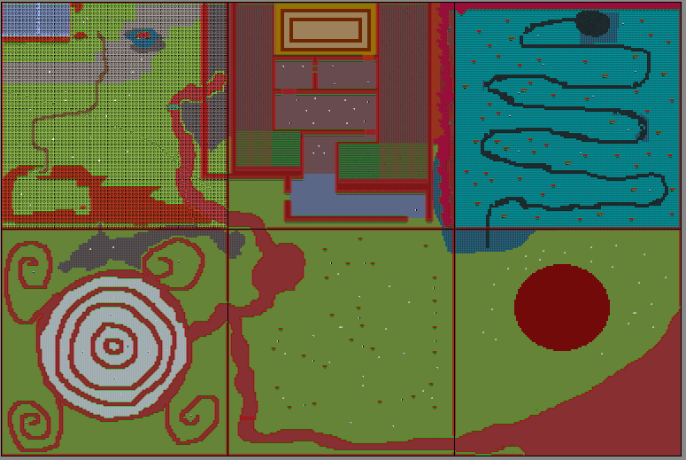
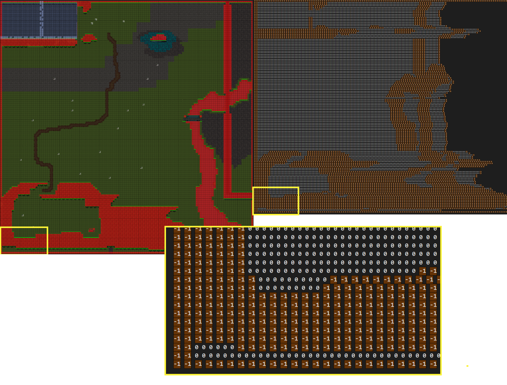

Arhitectura

Launchers
Fiecare launcher determina rezolutia si setarile necesare sistemului pe care ruleaza, apoi instantiaza game class-ul Straferliberator din core
Desktop Launcher
strafer-liberator-master/desktop
Configurari initiale,Functioneaza pe urmatoarele platforme:
Windows
Linux
Mac OS
Android Launcher
strafer-liberator-master/android
Configurari initiale, ascunde status bar-ul
Touch Manager
WorldRenderer
strafer-liberator-master/core/src/com/game/straferliberator/render/WorldRenderer.java
Primeste informatia furnizata de PaintManager pentru a randa fundalul si actorii, in ierarhia specificata, folosind Sprite Batch-ul.
Sprite Batch
Static, randeaza sprite-urile actorilor. Un sprite reprezinta o regiune dintr-o textura, aflate intr-un bounding box dreptunghiular.
Screens
In libGDX un Screen este un view interior ferestrei in care ruleaza aplicatia.
Loading Screen
strafer-liberator-master/core/src/com/game/straferliberator/screen/LoadingScreen.java
In el sunt definite toate asseturile incarcate de AssetManager. O bara de loading afiseaza progresul iar ecranul este schimbat in game screen cand toate asset-urile sunt incarcate.
Game Screen
strafer-liberator-master/core/src/com/game/straferliberator/screen/GameScreen.java
Instantiaza WorldRenderer -ul, apeleaza dispose pentru a elibera obiecte nefolosite din memorie, actualizeaza variabila elapsed si FPS din WorldData pentru operatiile ce tin evidenta timpului si itereaza prin toti actorii din PlayWorld pentru a apela metoda act()
Asset Manager
O clasa din libGDX care permite incarcarea de asseturi in memorie pe un alt thread fata de cel principal(GLThread). Acestuia i se seteaza loadere definite pentru clasele jocului si pot fi referentiate dupa aceea cu o funtie get(). AssetManagerul elimina timpii de load si memoria ocupata de obiecte ce nu sunt necesare, lucru ce nu putea fi realizat cu Greenfoot.
Asset Loaders
strafer-liberator-master/core/src/com/game/straferliberator/assetloaders
Implementeaza AsynchronousAssetLoader, avand definit tipul de clasa pe care trebuie sa il returneze si parametrii specifici unde este cazul
- AnimationLoader
- FontLoader
- GifImageLoader
- GreenfootImageLoader
- GreenfootSoundLoader
Paint Manager
strafer-liberator-master/core/src/com/game/straferliberator/render/PaintManager.java
Contine un array de tip Class<?>[] paintOrder in care este stocata ierarhia pe care WorldRenderer ul o respecta atunci cand apeleaza draw pentru actori. Pentru clasele ce nu sunt adaugate in ierarhie se verifica recursiv daca obiectul verificat este instance al unei clase din paintOrder. Nivelurile acestui arbore format sunt stocate intr-un hashmap classPaintIndex ca valoare , cheia fiind tipul clasei, iar in alt hashmap objectsInPaintOrder avem cheie nivelul arborelui iar valorile array uri cu obiectele de pe acel nivel. Arborele este actualizat cand un Actor este adaugat sau sters din world.
Greenfoot
strafer-liberator-master/core/src/greenfoot
Pachetul cu clase wrapper care adapteaza API-ul Greenfoot
Actor
Extinde gdx.Image, care la randul lui este o subclasa a gdx.Actor. Atat pentru libGDX cat si pentru Greenfoot un actor este un sprite care exista intr-un World/Stage si poate avea coliziuni si pozitie in spatiu. Un greenfoot.Actor primeste ca textura un GreenfootImage, bounding box-ul fiind calculat in functie de dimensiunile imaginii, pozitia(in pixeli) fiind punctul din centrul imaginiii.
World
Extinde gdx.Stage. In ambele situatii, Stage/World reprezinta clasele ce contin toti actorii si informatii despre locatiile si coliziunile dintre ei. Un GameScreen trebuie sa aiba un World in componenta.
GreenfootImage
Clasa utilizata de Greenfoot pentru a textura actorii sau background-ul din world. Extinde gdx.TextureRegion. De asemenea are functionalitati de randat forme geometrice, text sau alte GreenfootImage-uri in interiorul unui GreenfootImage. Aceste functionalitati sunt implementate folosind Pixmap,Bitmap,FrameBuffer-uri. Exista si functionalitati de baza precum setarea transparentei sau scalare.
Font
Extinde gdx.BitmapFont. Este folosit pentru a randa Stringuri in obiecte GreenfootImage. Deoarece un Bitmap consuma foarte multa memorie, exista un singur font static utilizat de toate clasele.
GreenfootSound
Are functionalitati simple de pornit sau manipulat fisiere audio.
Greenfoot
Clasa de utilitati ce se ocupa in principal de detectarea inputului de la mouse sau tastatura.
MouseInfo
Tine cont de pozitia cursorului pe ecran si de care dintre butoanele acestuia sunt apasate.
Game
strafer-liberator-master/core/src/com/port
Jocul propriu-zis se afla in core, pachetul com.port . Aici se afla tot ce se intapla in interiorul GameScreen-ului
PlayWorld
strafer-liberator-master/core/src/com/port/world/PlayWorld.java
Este un World ce contine toate sistemele de joc si un player si este legat la WorldListener.
World Sections
strafer-liberator-master/core/src/com/port/world/section/sections
Fiind nevoie de optimizari de memorie, utilizarea de WorldSectionuri a fost un mod viabil de a avea in memorie doar o parte din toata lumea jocului. Astfel, exista un graf definit in WorldListener reprezentand legaturile intre cele 6 sectiuni. Acestea sunt codate cu doua cifre in functie de linia si coloana pe care se afla in MapMenu sau mai exact pozitia lor in raport cu celalalte sectiuni. Sectiunile au unitatea de masura de baza in tile-uri de 64x64 pixeli.Figure 1. Cele 6 sectiuni -
WorldStructure
strafer-liberator-master/core/src/com/port/world/structure
Un WorldStructre este un actor dintr- o sectiune care se ocupa de limitele lumii si de coliziunile dintre el si Actori
-
Walls
Peretii invizibili sunt verticali si orizontali, primind in constructor directia pe care trebuie sa verifice si sa rezolve coliziunile cu un Entity.
-
Door
O usa ce blocheaza accesul intr- o anume zona. Poate fi deschisa sub o conditie definita.
-
-
Patfind matrix
MapGenerator-ul genereaza in fisierele .txt din folderul assets/maps o matrice de pathfind pentru fiecare sectiune. In matrice se gasesc 2 valori -1 si 0, o valoare corespunzand cate unui tile. -1 reprezinta un tile in care NPC-ul nu poate calca.
Figure 2. Comparatie Matrice Pathfind WorldSection11  -
Event-uri
Fiecare Event este asociat cu un tile dintr-un WorldSection
-
NPC placement
NPC-urile Hostile au pozitii default in care sunt incarcati atunci cand jocul isi da load sau sectiunea se schimba.
-
Scroller
strafer-liberator-master/core/src/com/port/world/Scroller.java
Scroller-ul este o clasa ce tine evidenta pozitiei playerului in lume si actualizeaza background-ul , dar si pozitia actorilor relativi la pozitia playerului astfel incat lumea de joc sa nu fie limitata la viewport, iar playerul sa fie constant in mijlocul ecranului atat timp cat nu este in marginea sectiunii. Scrollerul are 2 variabile statice prin care se tine evidenta pozitiei globale a actorilor (scrolledX,srolledY).
WorldListener
strafer-liberator-master/core/src/com/port/world/WorldListener.java
WorldListener-ul comunica cu scrollerul si playerul, avand rolul de a tine logica din spatele conexiunilor intre WorldSection-uri si de a decide cand si cum acestea trebuie schimbarte. Metoda changeWorldSection seteaza pozitia playerului in functie de latura in care sunt intersectate sectiunile, iar apoi incarca fundalul din assetManager, sterge din PlayWorld entitatile si adauga entitatile specifice sectiunii in care a intrat plahyerul. Schimbarea aceasta nu necesita loading screenuri.
Entities
strafer-liberator-master/core/src/com/port/entity
Un Entity este un Actor care respecta regulile Scroller-ului si poate interactiona cu alti actori de tip Entity
-
Item-ul este un obiect detinut de Player sau de NPC-uri. Pot fi atasate de Actorul care il detine sau pot fi de tip PickUp(sunt ridicate de Player)
-
Un Mover este un Entity ce se poate misca si are coliziune cu pereti si alti Moveri, este de 2 tipuri :
-
Actorul ce trebuie sa existe constant in PlayWorld. Playerul controleaza Scroller-ul prin pozitia sa si modifica scrolledX scrolledY. Acesta proceseaza inputul si face actiuni corespunzatoare: se misca, isi schimba viteza, da toggle unui meniu, foloseste un item.
- BasePlayer - Clasa pe care o extinde Player, contine metodele de baza pentru move si knockback
-
sunt cele 2 elemente din HUD ce arata nivelul de hit points / stamina ramas. Se actualizeaza in functie de cat damage primeste Playerul sau cata stamina foloseste in timp ce se misca cu sprint
-
Se activeaza cu tasta E sau apasand butonul dedicat pe Android. Acesta arata ce Iteme sunt deblocate de player(cele obtinute cu PickUp). Pot fi selectate cu click stanga si deselectate cu click dreapta.
-
O metoda prin care un mover este impins in directia opusa atunci cand o forta este aplicata asupra lui. In general se foloseste pentru a rezolvaa coliziuni intre Iteme care dau damage de tip melee si NPC-uri sau Player. Se folosesc formule de mecanica clasica si trigonometrie de baza.
-
NPC(Non playable character) sunt orice alt Entity care nu este Player. Se clasifica in 2 tipuri:
-
Apare pe harta in functie de eventurile din EventSystem si initiaza un anumit dialog atunci cand Playerul il atinge. Are mereu stare de idle.
-
Un NPC Hostile are scopul de a urmari si ataca Playerul cand se afla in raza sa de acoperire.
-
In spatele pathfindingului si urmaririi se afla o implementare a algoritmului Breadth First Search aplicat pe matricea fiecarui WorldSection. Cu acesta se calculeaza cel mai scurt drum care evita tile-urile marcate cu -1 in matrice, iar ordinea de pasi ce trebuie facuti prin tile-urile pana la Player se salveaza intr-o coada de directii
-
Combat
atunci cand Playerul este in proximitatea NPC-urilor, fiecare tip de Hostile intra intr-un state de combat in care ataca Player-ul in modul specific clasei. I se aplica damage si knockback in cazul in care e atacat de Player.
- Knockback -la fel ca in cazul Playerului
-
-
-
-
File Loaders
Clasele Loader si DialogLoader contin metode ce incarca fisierele in care sunt stocate date din folderele:
saves
dialogs
maps
Systems
Pentru a putea avea un storyline cu eventuri predefinite si stari dinamice ale jocului a fost nevoie de implementarea mai multor sisteme
-
Salveaza in anumite momente toate datele necesare pentru a continua jocul dupa un restart al aplicatiei. Acesta incarca in WorldData : locatia si viata player-ului, sectiunea in care se afla, sectiunile deblocate, obiectivele, event-ul curent, item-ele deblocate si npc-urile cunoscute.
-
Acesta contine cronologia eventurileor(sau questurilor) din povestea jocului. Parcurgerea lor schimba comportamentul PlayWorld-ului in raport cu Playerul, inserand sau eliminand din lume obiecte unice doar pentru acel event(ex un item/ un NPC cu un anume dialog) . Fiecare event are un numar ce este salvat in WorldData.
MusicSystem
Exista 3 melodii in joc: una pentru meniurile de pauza si altele doua pentru gameplay loop. Cele pentru gameplay loop sunt actualizate dinamic in functie de ceea ce face playerul. cu un delay de cateva secunde este determinat daca playerul este in stare de combat sau de explorare si schimba intre muzica combat si idle. in timpul momentelor de cutscene, dialog sau tutorial muzica este oprita.
Dialog System
Sistemul de dialoguri a fost introdus pentru a da informatie contextuala playerului fara a intrerupe gameplayul prea des cu cutsceneuri. Acesta sta pe baza NPC urilor friendly si are un design clasic de RPG.
Graphics
strafer-liberator-master/core/src/com/port/utils/graphics
Pe langa clasele rudimentare oferite de Greenfoot, a trebuit sa implementam alte clase pentru control grafic
-
Este un actor fara coliziune cu scopul de a fi o simpla imagine care in general este utilizata ca o componenta de UI
-
La fel ca Picture, aceasta clasa este un element de UI care doar da display unui text
- O clasa care
primeste un gdx.Array(GreenfootImage) si o durata a frame-urilor in
milisecunde. Clasa are metode ce returneaza toate frame-urile, frame-ul ce
trebuie afisat la un moment de timp calculat in fucnctie de variabila
WorldData.elapsed.
-
O clasa ce citeste un fisier .gif si formeaza un GifImage
-
Un animation este o clasa cu un GifImage ce poate rula pentru un numar limitat de ori .
-
Primeste un animation si un actor care trebuie animat. Este nevoie de un runner pentru ca fiecae animation este unic in asset manager si nu poate fi rulat intern pentru mai multi actori de acelasi tip.
-
Un animaton cu scop similar ca Picture si Text
-
-
User Interface
strafer-liberator-master/core/src/com/port/UI
UI- ul se imparte intre meniuri si HUD(heads up display), diferenta fiind ca HUD ul este afisat in timpul gameplay loopului, iar meniurile cand WorldData.PAUZA=true
Meniuri
strafer-liberator-master/core/src/com/port/UI/menu
- MainMenu - meniul care apare cand se intra in GameScreen, are un buton Continue si unul New
- Pause- este accesat in timpul jocului prin tasta esc sau pe android prin butonul dedicat. Are butoanele Resume, Map, MainMenu
- MapMenu- accesat din Pause Menu. Afiseaza sectiunile deblocate din harta, obiectivele si pozitia playerului
- Tutoriale - explica anumite aspecte pentru mecanici/npc/items
- Cutscene-uri - in esenta tot tutoriale dar au scop in dezvoltarea vizuala a povestii
- HUD - inventory, healthbar, staminabar
Butoane - Butoanele din UI sunt compatibil atat cu mouse-ul pe desktop cat si cu touchscreen. Fiecare tip de buton are intregul behaviour definit, butoanele actualizandu-se diferit pentru fiecare meniu
- Sunt controalele specifice pentru Android. apar pe ecran atunci cand WorldData.PAUZA=false si se actualizeaza la fel dinamic in functie de ce actiuni sunt disponibile playerului (Dpad si sprint pentru miscarea playerului, inventory pt a accesa inventory-ul, butonul de pauza si butoanele dedicate pentru controlul itemelor)
WorldData
strafer-liberator-master/core/src/com/port/world/WorldData.java
Contine o multitudine de field-uri si metode statice ce sunt accesate atat la inceput cat si in timpul jocului. Aici sunt incarcate datele din fisierele de salvare, sunt actualizate variabilele legate de frame-rate, metodele necesare pentru sistemul de eventuri si cel de dialoguri, pentru pathfinding si pentru setarile initiale ale rezolutiei.
MapGenerator
mapGenerator/Mapgenerator/MapGen
Un tool ce ne ajuta sa automatizam generarea de obiecte ce sunt adaugate in PlayWorld, cat si matricele asociate pathfindingului in fiecare WorldSection
Fiecare WorldSection a fost construit multi-layered in Tiled cu tile-uri de 64*64pixeli prezente ca tileset-uri ïn mapGenerator\TiledMaps\tilesets. Acest lucru ne permite sa modificam foarte usor harta si ceea ce se afla pe ea dintr-un GUI. Apoi acestea sunt exportate in format JSON in folderul "mapGenerator/TiledMaps". Cand aplicatia este rulata, un dialog windows pentru selectie de fisiere este deschis penttru a alege ce fisier vrem sa parsam in consola avem 2 optiuni disponibile:
1. Pentru a genera matricea de pathfinding
1. pentru a genera cod java cu functii init() ce poate fi inserat direct in clasele WorldSection<11-23>
Output-ul este salvat in fisiere .txt, iar apoi adaugate in core project.
Aplicatia a fost scrisa in C++17 , iar parsarea s-a realizat cu libraria Tileson
Tiled Maps
TIleson
Pathfind matrix
World Structure generation